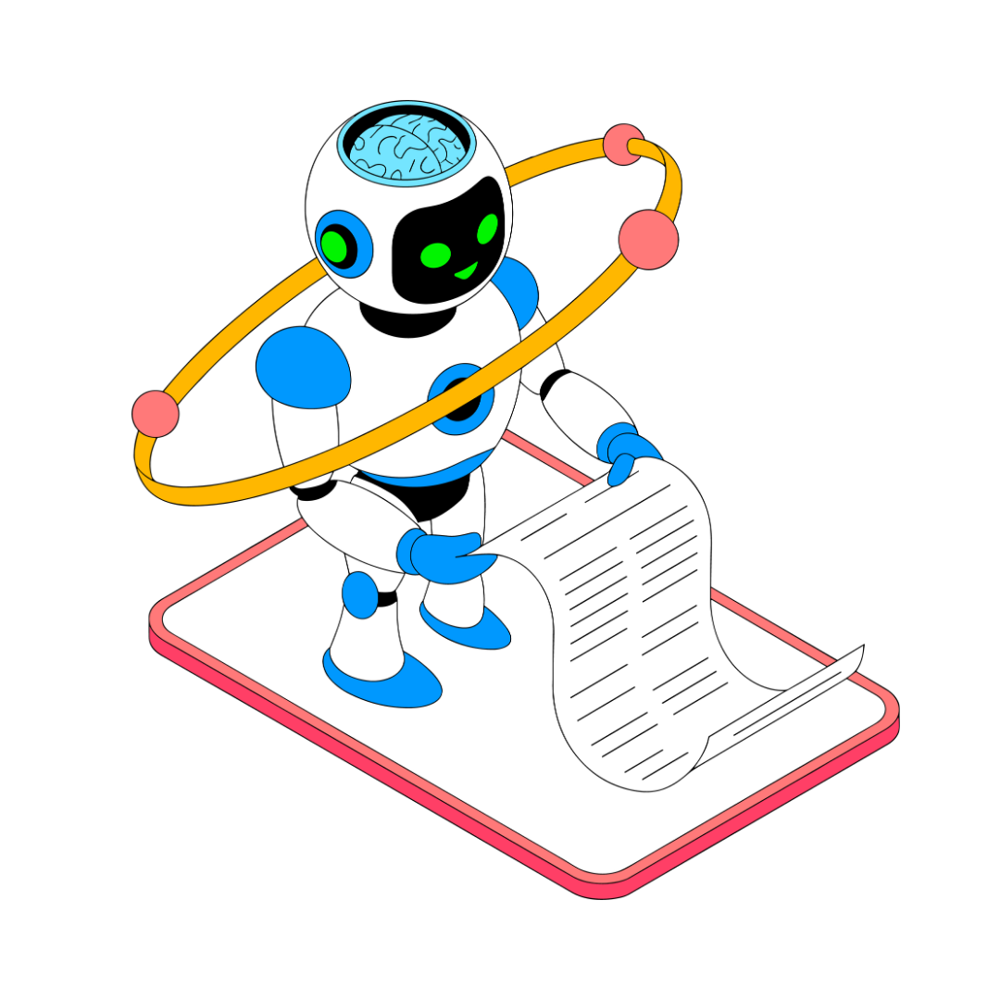

Создание ИИ-ассистента: как превратить нейросеть в ведущего инженера вашего отдела
Вы устали каждый раз объяснять нейросети: «Ты - инженер ОВиК, используй СП 60.13330, отвечай таблицами…»? После этого урока вы один раз настроите ассистента и будете получать готовые профессиональные ответы без повторных вводных. Экономия времени - до 70%.

Почему без настройки вы теряете время
Рассмотрим три конкретных тормоза, которые убирает настройка, и вы сразу захотите ее сделать.
Встроенный материал 1: Flipcard
Источник и ограничения. Для исходной интерактивности требуется сеть; статическое содержание сохранено, если было доступно.
Фактор:Отсутствие специализации
Проявление фактора
true
Каждый запрос требует повторного указания роли, области знаний, нормативной базы
Следующий вопрос
Фактор:Ограниченный контекст
Нейросеть не запоминает необходимые стандарты и предпочтительные форматы
Фактор:Отсутствие базы знаний
Ассистент не имеет доступа к внутренним документам организации (типовые узлы, шаблоны)



Источник и ограничения. Для исходной интерактивности требуется сеть; статическое содержание сохранено, если было доступно.
Превращаем профиль в системный промпт
Системный промпт задает поведение ассистента на протяжении всего диалога. Ниже приведены примеры для основных разделов проектирования, составленные в официально-деловом стиле.
Рассмотрим примеры, как выглядят системные промпты для настройки ИИ для разных специальностей согласно таблице выше. Подробные системные инструкции для каждой специализации вы можете скачать в материалах к уроку. Повторите их и соберите для себя готового помощника.
Встроенный материал 2: Интерактивный Демо-Плеер
Источник и ограничения. Локальная копия HTML и доступных ресурсов; функции исходной платформы не воспроизводятся.


Источник и ограничения. Локальная копия HTML и доступных ресурсов; функции исходной платформы не воспроизводятся.
В дополнение к видеороликам я разработала для вас чек-лист для быстрой настройки ИИ-ассистентов под себя. Скачайте его, чтобы использовать каждый раз перед настройкой ИИ-ассистента.